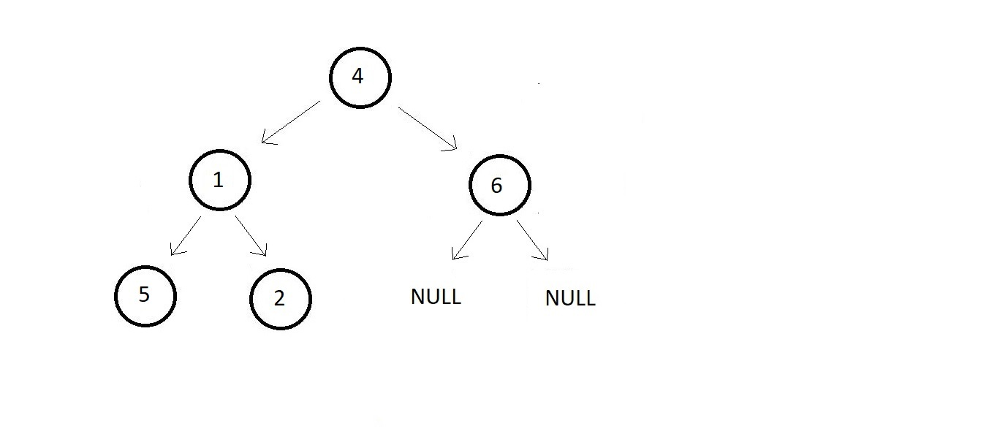

Binary tree we wi'll use ↓

And our final order of postorder traversal is : 5 → 2 → 1 → 6 → 4.
void postOrder(struct node* root){
if(root!=NULL){
postOrder(root->left);
postOrder(root->right);
printf("%d ", root->data);
}
}
#include<stdio.h>
#include<malloc.h>
struct node{
int data;
struct node* left;
struct node* right;
};
struct node* createNode(int data){
struct node *n; // creating a node pointer
n = (struct node *) malloc(sizeof(struct node)); // Allocating memory in the heap
n->data = data; // Setting the data
n->left = NULL; // Setting the left and right children to NULL
n->right = NULL; // Setting the left and right children to NULL
return n; // Finally returning the created node
}
void preOrder(struct node* root){
if(root!=NULL){
printf("%d ", root->data);
preOrder(root->left);
preOrder(root->right);
}
}
void postOrder(struct node* root){
if(root!=NULL){
postOrder(root->left);
postOrder(root->right);
printf("%d ", root->data);
}
}
int main(){
// Constructing the root node - Using Function (Recommended)
struct node *p = createNode(4);
struct node *p1 = createNode(1);
struct node *p2 = createNode(6);
struct node *p3 = createNode(5);
struct node *p4 = createNode(2);
// Finally The tree looks like this:
// 4
// / \
// 1 6
// / \
// 5 2
// Linking the root node with left and right children
p->left = p1;
p->right = p2;
p1->left = p3;
p1->right = p4;
preOrder(p);
printf("\n");
postOrder(p);
return 0;
}